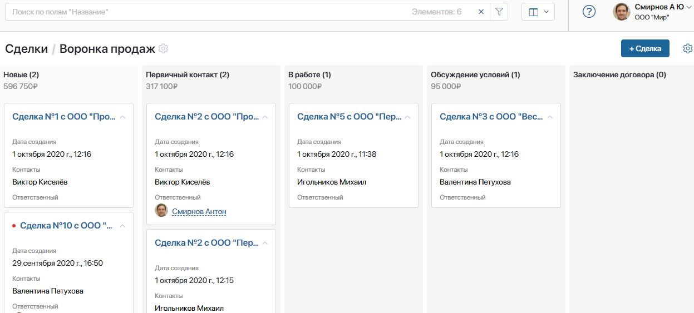
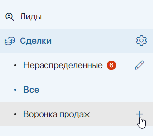
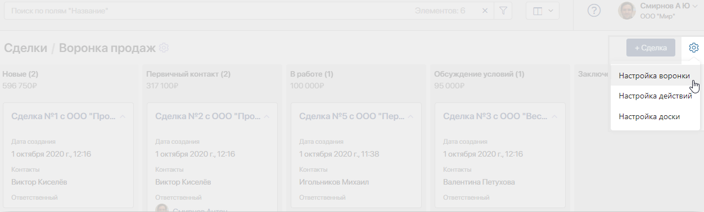
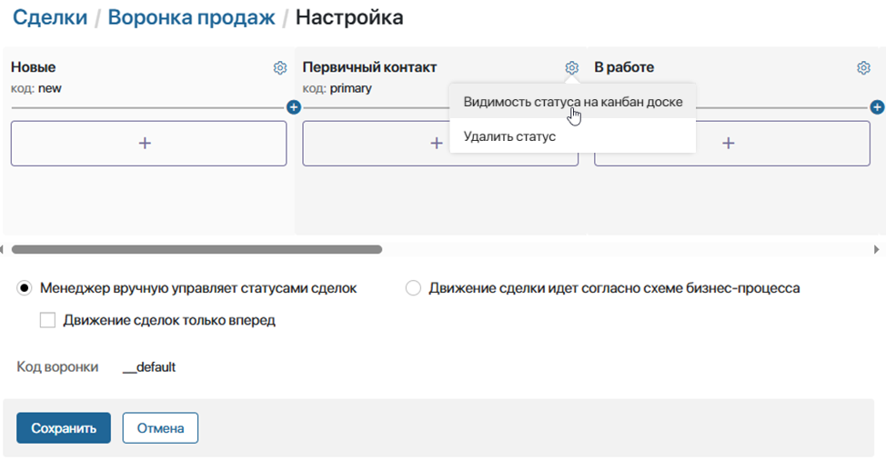
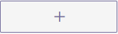
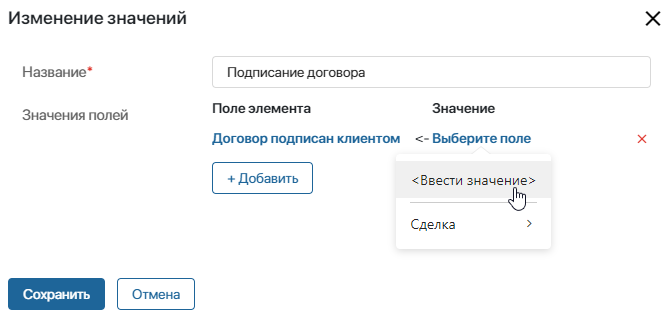
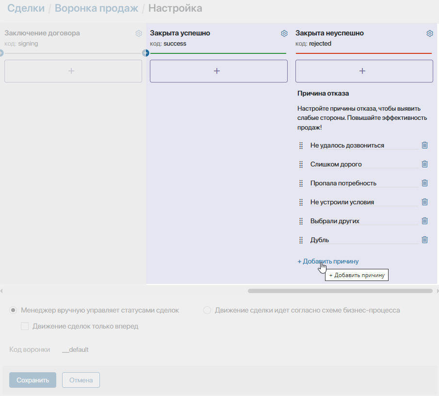
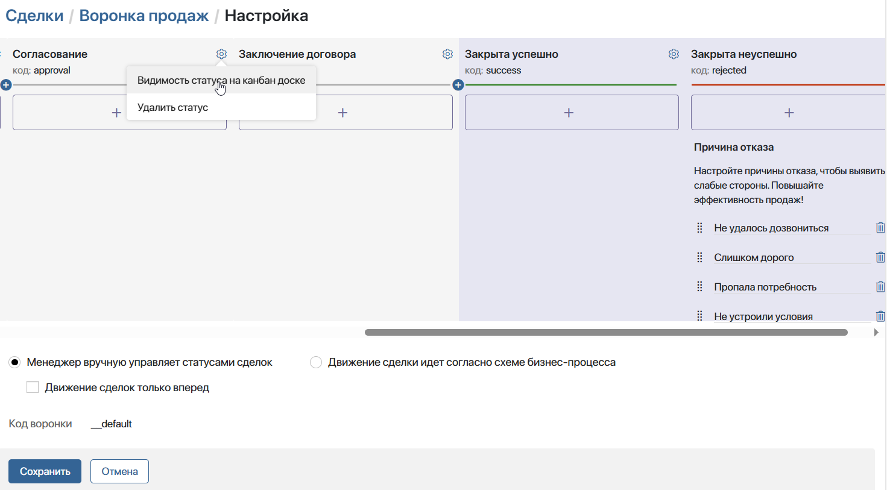
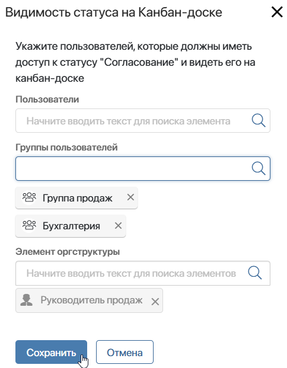
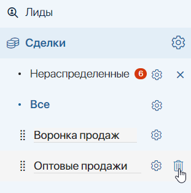

Воронка — это инструмент, который позволяет наглядно отслеживать ход сделок от первого контакта до закрытия. Вы всегда в курсе, сколько сделок находится на каждом этапе в настоящее время, кто за них отвечает, и какие задачи по ним назначены.

Колонки соответствуют статусам сделки на каждом этапе процесса продажи. Когда сделка меняет статус, она переходит с одного этапа на другой. Подробнее читайте в статье «Изменение статуса и закрытие сделки».
Стандартная воронка описывает простой, но наиболее распространённый процесс продаж. Хотя этапы стандартной воронки подойдут большинству компаний, вы можете изменять их количество и редактировать названия по своему усмотрению. Это позволит максимально точно отразить бизнес-модель вашей компании.
начало внимание
Настраивать, добавлять и удалять воронки могут только пользователи, включенные в группу Администраторы.
конец внимание
Добавить новую воронку
Вы можете настроить несколько воронок в приложении Сделки. Для этого справа от последней воронки нажмите на значок + и укажите название. После этого можно настроить этапы новой воронки.

Если вы создали несколько воронок, вы также можете изменить порядок их расположения. Для этого нажмите на значок карандаша рядом с названием страницы Нераспределенные и перетащите воронки в нужное место.
Настроить этапы
Чтобы изменить этапы обработки сделки:
- Откройте страницу воронки и включите способ отображения канбан-доска.
- В правом верхнем углу нажмите на значок шестерёнки и выберите опцию Настройка воронки.

- В нижней части открывшейся страницы укажите, каким образом сделки будут переходить с одного этапа на другой:
- Менеджер вручную управляет статусами сделок — эта опция позволяет сотрудникам вручную передвигать сделку с одного этапа на другой;
- Движение сделок только вперед — запретить возвращать сделки на предыдущие этапы;
- Движение сделки идет согласно схеме бизнес-процесса — сделка будет автоматически перемещаться с одного этапа воронки на другой в ходе выполнения бизнес-процесса. Вы можете выбрать существующий процесс или создать новый. Обратите внимание, чтобы настройка работала корректно, в процесс необходимо добавить блоки Управление статусом и выбрать статусы текущей воронки.
- Менеджер вручную управляет статусами сделок — эта опция позволяет сотрудникам вручную передвигать сделку с одного этапа на другой;
- На открывшейся странице настройте этапы воронки. Вы можете:

- отредактировать название этапа, нажав на него;
- поменять этапы местами, перетаскивая их;
- создать этап, нажав ;
- настроить действия, которые будут выполняться при переходе на этап;
- скрыть или показать этап сделок определённым пользователям. Настройка выполняется с помощью опции Видимость статуса на канбан-доске;
- исключить этап, нажав рядом с его названием значок шестерёнки и выбрав Удалить статус. Первый и финальные этапы удалить нельзя.
Настроить действия в воронках
Чтобы выбрать действие, которое будет автоматически выполняться при смене статуса сделки, под названием колонки нажмите  .
- Запуск бизнес-процесса — настройка позволяет выбрать бизнес-процесс, который будет запускаться при переходе с одного этапа на другой. Например, вы можете настроить автоматический запуск процесса согласования договора при переходе сделки с этапа В работе на этап Обсуждение условий;
- Отправка сообщения на электронную почту — с помощью этого действия можно, например, автоматически отправлять оповещения о готовности заказа или пересылать клиентам на рассмотрение согласованный в ходе процесса договор.
Действие настраивается так же, как и блок Оповещение на email. Подробнее о настройке можно прочитать в статье «Оповещения на электронную почту». Если во время отправки уведомления возникнет ошибка, например, адрес получателя не определится, сотрудник, изменивший статус сделки, получит оповещение об этом;
- Вызов сторонней системы при помощи веб-хука — выбрав данную опцию, вы сможете автоматически передавать данные из ELMA365 во внешнюю систему.
Действие настраивается так же, как и блок Webhook. Подробнее о настройке можно прочитать в статье «Webhook».
Если внешняя система вернет ошибку при отправке запроса, сотрудник, изменивший статус сделки, получит оповещение об этом;
- Отправка SMS сообщения — эта опция позволяет уведомить клиентов или сотрудников о любых событиях при помощи SMS. Например, можно настроить автоматическую отправку оповещений о передаче заказа в транспортную компанию.
Действие настраивается так же, как и блок Отправить SMS. Предварительно необходимо осуществить интеграцию с провайдером сервиса sms-рассылки. Подробнее о настройке можно прочитать в статье «Отправить SMS».
Если возникнет ошибка с отправкой sms, например, ELMA365 не сможет получить доступ к внешнему сервису, то сотрудник, изменивший статус сделки, получит оповещение об этом;
- Изменение значений в сделке — эта настройка позволяет автоматически изменить значение любого поля на карточке сделки при смене стадий воронки. Предположим, у сделки есть атрибут Договор подписан клиентом. У него может быть два значения: Да или Нет. Используя действие Изменение значений в сделке, можно автоматически выставить нужное значение для данного атрибута, когда сделка перейдет, например, с этапа подписания на этап реализации.
Чтобы настроить действие, в левом столбце выберите поле с карточки сделки, значение которого вы хотите изменить. В столбце справа укажите значение, которое будет присвоено полю.

Вы можете выбрать несколько действий, в таком случае система будет выполнять их в том порядке, в котором они были добавлены.
Финальные этапы воронки
Прокрутив ползунок вправо до конца, вы увидите финальные статусы воронки — Закрыта успешно и Закрыта неуспешно. В столбце этапа Закрыта неуспешно вы можете настроить причины отказа. Чтобы дополнить список, нажмите на кнопку + Добавить причину. Для удаления причины нажмите значок корзины напротив её названия.

По умолчанию сделки со статусом Закрыта неуспешно не показываются на странице воронки. Можно настроить видимость этапа и показать сделки в этом статусе.
Настроить видимость этапов на канбан-доске
Вы можете настроить различное отображение канбан-доски на странице воронки для разных пользователей. Например, руководитель видит все этапы сделки на доске, а группа отдела бухгалтерии только этап Согласование. Благодаря скрытию статусов сотрудники видят только те колонки, с которыми работают.
При этом элементы приложения со скрытыми статусами отобразятся у всех пользователей, если выбрать представление в виде таблицы.
По умолчанию скрыт статус Закрыта неуспешно. Остальные этапы отображаются для всех пользователей.
Чтобы скрыть или показать статус сделки:
- Нажмите значок шестерёнки справа от названия этапа и выберите опцию Видимость статуса на канбан-доске.

- В открывшемся окне укажите, кому показать статус сделки на канбан-доске. Вы можете выбрать:
- пользователя;
- группу пользователей;
- элемент организационной структуры.

Настроить видимость воронок и их элементов
Вы можете ограничить видимость каждой воронки в левом меню, а также настроить доступ к элементам в ней.
Например, команды продаж, распределённые по группам пользователей, смогут видеть только те воронки, с которыми они работают.
Доступ к элементам ограничивается в настройках приложения Сделки.
Для настройки видимости воронки нажмите на значок карандаша рядом с названием страницы Нераспределенные. Затем выберите появившийся значок шестерёнки рядом с нужной воронкой и укажите группы и роли пользователей, которые смогут её видеть.
Подробнее об этом читайте в статье «Настройка доступа к приложениям CRM».
Удалить воронку
Страницу Все и Нераспределенные, а также воронку, добавленную по умолчанию, нельзя убрать из списка. Однако вы можете удалить пользовательские воронки. Для этого:
- В приложении Сделки откройте воронку, которую хотите удалить. Если в ней есть элементы, перед удалением перенесите их в другую воронку.
- Нажмите на значок карандаша рядом с названием страницы Нераспределенные.
- Напротив удаляемой воронки нажмите значок корзины и подтвердите действие.
